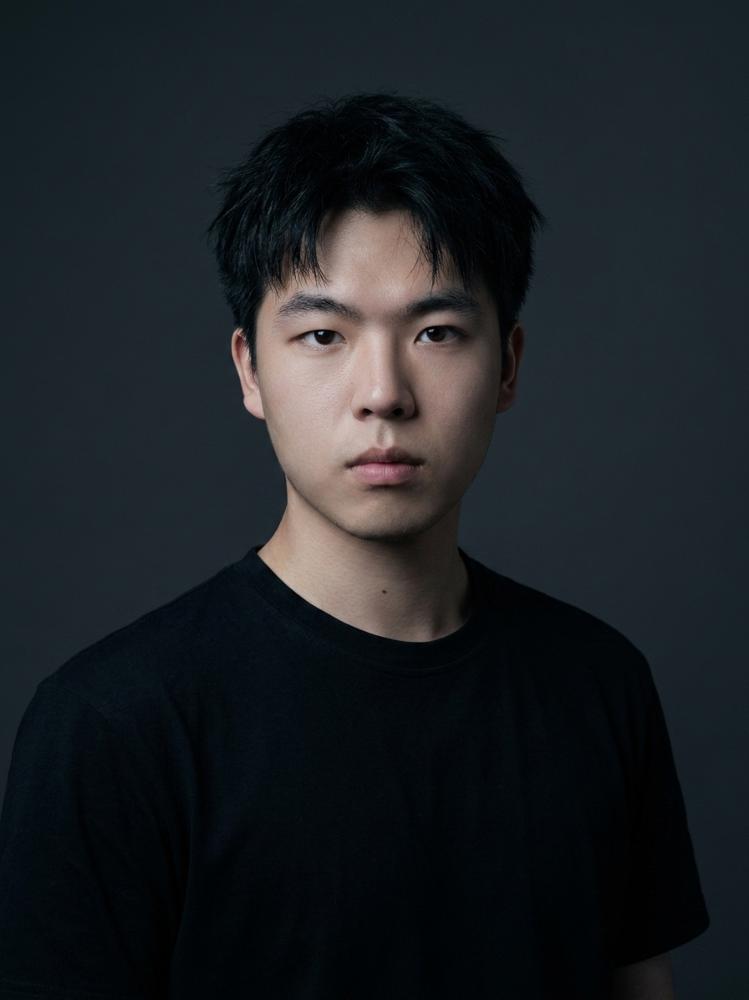
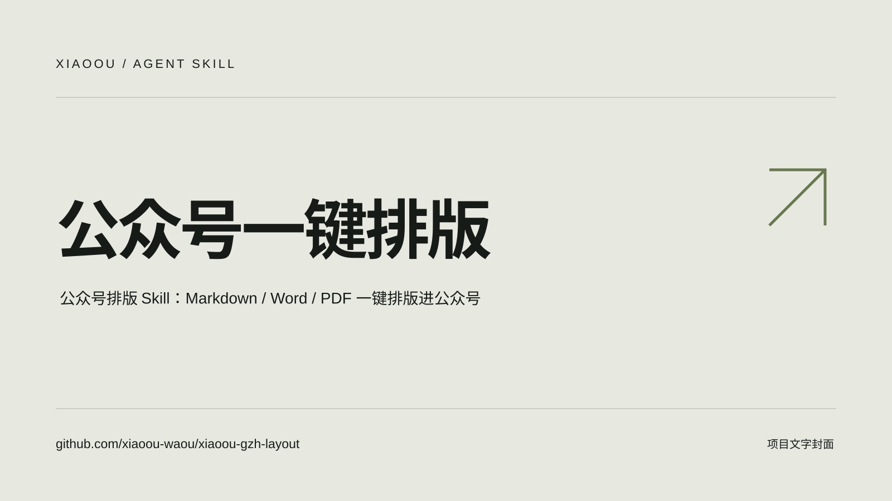
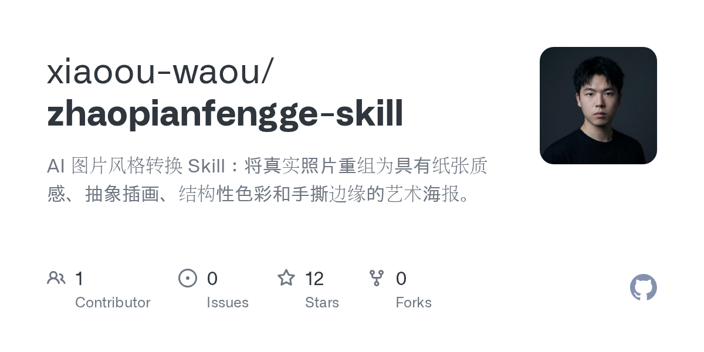
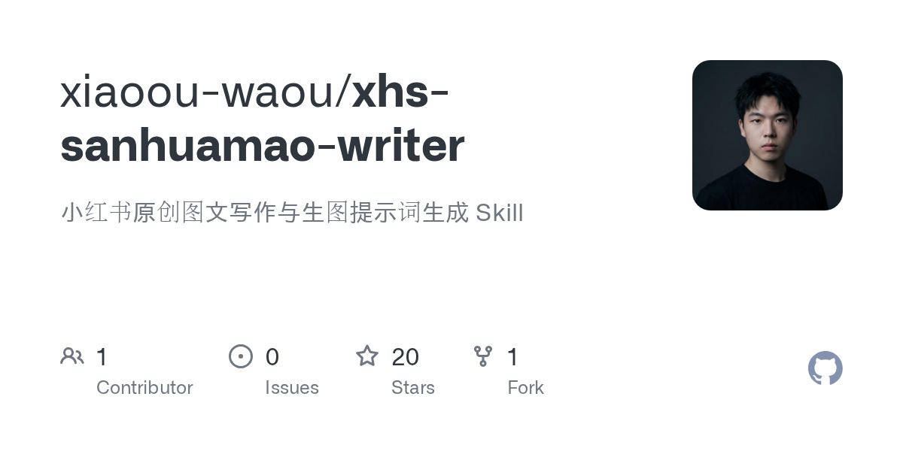
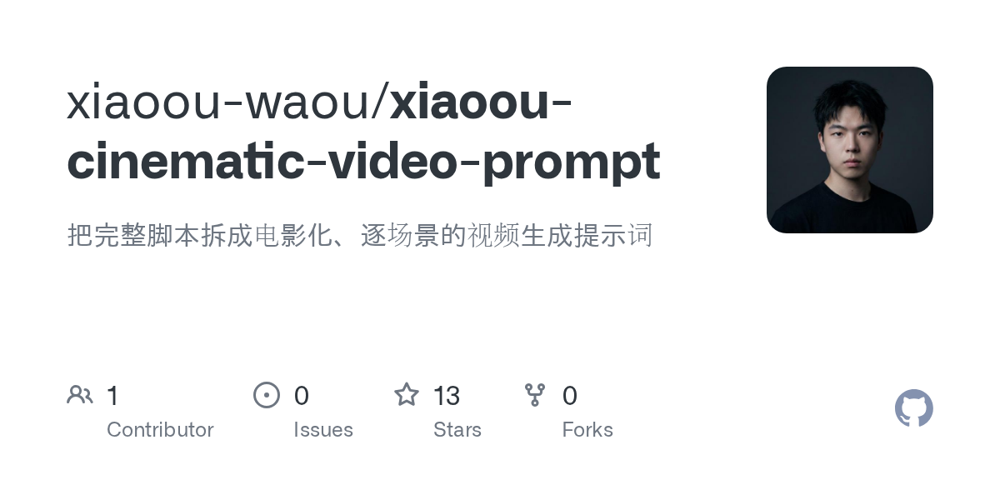
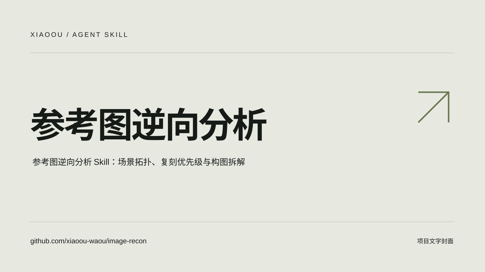

从用户出发。
探索 AI、理解用户，把想法变成产品。关注真实需求，也关注一个想法如何走到可用的终点。
INDEPENDENT MIND. INFINITE POSSIBILITIES.
AI 产品经理 · Agent · 人机协作
探索 AI，理解用户，
把想法变成真正可用的产品。
PRODUCT. AGENT. EXPLORER.
AI 产品经理 · AI / Agent / 人机协作
AI 产品经理，探索 AI、理解用户，把想法变成产品。
关注 AI 产品、Agent 与人机协作，偶尔写点思考。

探索 AI、理解用户，把想法变成产品。关注真实需求，也关注一个想法如何走到可用的终点。
关注 Agent 的执行、经验治理与验收，思考一个智能体如何可靠地完成真实任务。
关注人机协作、控制权与 AI 分身，探索 AI 什么时候行动，什么时候把决定交还给人。
保持好奇。持续创作。MAKE A MARK.
工具、创作与一次次探索。
每一个项目，都是新的出发。

01 / SKILLVIEW PROJECT公众号排版 Skill：Markdown / Word / PDF 一键排版进公众号
xiaoou-gzh-layout

02 / SKILLVIEW PROJECTAI 图片风格转换 Skill：把真实照片重组为艺术海报
zhaopianfengge-skill

03 / SKILLVIEW PROJECT小红书原创图文写作与生图提示词生成 Skill
xhs-sanhuamao-writer

04 / SKILLVIEW PROJECT把完整脚本拆成电影化、逐场景的视频生成提示词
xiaoou-cinematic-video-prompt

05 / SKILLVIEW PROJECT参考图逆向分析 Skill：场景拓扑、复刻优先级与构图拆解
image-recon
AI 材质插画生成 Skill
文章写作 Skill
给 AI Agent 一键装上互联网能力
在 Mac 上捕捉、标注、录制、创作的桌面工具
确定性 UI 设计质量检测器：专查 AI 生成页面的廉价信号
这个网站本身，纯手工打造
项目代码与使用说明见仓库；具体使用范围以各项目许可为准。
THOUGHTS, SHARED.
反思能写出下一次怎么做，但只有被验证的变化，才有资格进入下一个版本。反思负责提出候选经验，治理决定它能不能成为版本。
Agent 的难点，正在从回答问题转向把任务送到可验收的终点。执行循环可以复用之后，产品差异化会落在哪里？
过去两年，AI 产品最明显的变化，是从「帮我想」逐渐走向「替我做」。聊天模型负责回答问题，Agent 则开始浏览网页、读取文件、调用工具，把一个多步骤任务从头推进到尾。真正成熟的 AI 产品，都懂得在什么时候把控制权交还给人。
AI 分身真正的产品难题，不是一次性生成一个「像你」的角色，而是把人的经历、偏好和表达转成可调用的资产。这篇拆解两款产品的 AI 分身实践。
关注 AI 产品、Agent 与人机协作。
偶尔写点思考，持续更新。
探索 AI、理解用户，把想法变成产品。关注真实需求，也关注一个想法如何走到可用的终点。
关注 Agent 的执行、经验治理与验收，思考一个智能体如何可靠地完成真实任务。
关注人机协作、控制权与 AI 分身，探索 AI 什么时候行动，什么时候把决定交还给人。
AI 与产品思考 / Side Projects
Agent
反思能写出下一次怎么做，但只有被验证的变化，才有资格进入下一个版本。反思负责提出候选经验，治理决定它能不能成为版本。
AI 产品
Agent 的难点，正在从回答问题转向把任务送到可验收的终点。执行循环可以复用之后，产品差异化会落在哪里？
AI 产品
过去两年，AI 产品最明显的变化，是从「帮我想」逐渐走向「替我做」。聊天模型负责回答问题，Agent 则开始浏览网页、读取文件、调用工具，把一个多步骤任务从头推进到尾。真正成熟的 AI 产品，都懂得在什么时候把控制权交还给人。
AI 分身
AI 分身真正的产品难题，不是一次性生成一个「像你」的角色，而是把人的经历、偏好和表达转成可调用的资产。这篇拆解两款产品的 AI 分身实践。
AI 社交
从 AI Tinder 到分身服务，个人 AI 要先解决的不是「像不像你」，而是用户为什么愿意把代表权交给它。